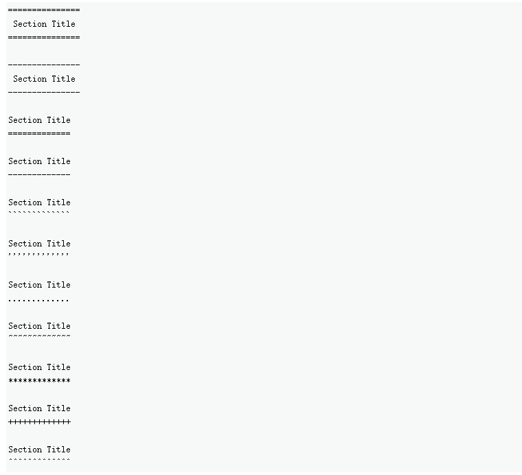

reStructuredText¶
- reStructuredText¶
reStructuredText（RST，ReST 或 reST）是 Docutils 和 Sphinx 使用的默认纯文本标记语言。其中 Docutils 提供了基本的 reStructuredText 语法，而 Sphinx 扩展它以支持其他功能。Docutils 的标记语法和解析器组件。
reStructuredText 是一个易于阅读、所见即所得的纯文本标记语法和解析器系统。它对于 in-line 程序文档（如 Python 文档字符串）、快速创建简单网页和独立文档都很有用。reStructuredText 专为特定应用程序域的可扩展性而设计。reStructuredText 解析器是 Docutils 的一个组件。reStructuredText 是 StructuredText 和 Setext 轻量级标记系统的修订和重新解释。
reStructuredText 的主要目标是定义和实现在 Python 文档字符串和其他文档域中使用的标记语法，该语法可读且简单，但对于非平凡的使用来说功能足够强大。标记的目的是将 reStructuredText 文档转换为有用的结构化数据格式。
下面的指南介绍了 reST 的最重要的方面。对于权威的 reStructuredText 参考，请参考 docutils 文档。
参见
权威的 reStructuredText 用户文档。本文档中的”ref”链接链接到 reST 参考中各个构造的描述。
一个 reStructuredText 文档是由主体或块级元素组成的，并且可以被结构化为章节。各个章通过标题样式（下划线和可选的上划线）来表示。各章包含主体元素和/或子章。一些主体元素包含进一步的元素，如包含列表项的列表，这些列表项又可能包含段落和其他主体元素。其他元素，如段落，包含文本和内联标记元素。
空格¶
建议使用空格缩进，但也可以使用制表符。制表符将被转换为空格。每隔 8 列就有一个制表符停顿（处理系统可能会使这个值可配置）。
其他空白字符（换行符[chr(12)]和垂直制表符[chr(11)]）在处理前被转换为单个空格。
空白行¶
空白线用于分隔段落和其他元素。多个连续的空行等同于一个空行，除了在文字块中（所有的空白都被保留）。当标记使元素分离不明确时，可以省略空行，与缩进一起使用。文件的第一行被视为前面有一个空行，而文件的最后一行被视为后面有一个空行。
缩进¶
缩进是用来表示–而且只在表示–区块引号、定义（在定义列表中）和局部嵌套内容时有意义。
列表项的内容（列表项的多行内容，以及一个列表项中的多个主体元素，包括嵌套列表）。
文字块的内容，以及
显式标记块的内容（指令、脚注…）。
任何缩进程度小于当前级别的文本（即未缩进的文本或 “dedents”）都会结束当前级别的缩进。
由于所有的缩进都是重要的，缩进的程度必须一致。例如，缩进是块引用的唯一标记指标。
RST
This is a top-level paragraph.
This paragraph belongs to a first-level block quote.
Paragraph 2 of the first-level block quote.
渲染：
This is a top-level paragraph.
This paragraph belongs to a first-level block quote.
Paragraph 2 of the first-level block quote.
在一个区块引语中的多级缩进将导致更复杂的结构。
RST
This is a top-level paragraph.
This paragraph belongs to a first-level block quote.
This paragraph belongs to a second-level block quote.
Another top-level paragraph.
This paragraph belongs to a second-level block quote.
This paragraph belongs to a first-level block quote. The
second-level block quote above is inside this first-level
block quote.
渲染：
This is a top-level paragraph.
This paragraph belongs to a first-level block quote.
This paragraph belongs to a second-level block quote.
Another top-level paragraph.
This paragraph belongs to a second-level block quote.
This paragraph belongs to a first-level block quote. The second-level block quote above is inside this first-level block quote.
当一个段落或其他结构由多于一行的文本组成时，各行必须左对齐。
This is a paragraph. The lines of
this paragraph are aligned at the left.
This paragraph has problems. The
lines are not left-aligned. In addition
to potential misinterpretation, warning
and/or error messages will be generated
by the parser.
有几个结构体以一个标记开始，结构体的主体必须相对于标记缩进。对于使用简单标记的结构体（子弹列表、枚举列表），主体的缩进程度由第一行文本的位置决定。例如：
RST
- This is the first line of a bullet list
item's paragraph. All lines must align
relative to the first line.
This indented paragraph is interpreted
as a block quote.
Another paragraph belonging to the first list item.
Because it is not sufficiently indented,
this paragraph does not belong to the list
item (it's a block quote following the list).
渲染：
This is the first line of a bullet list item’s paragraph. All lines must align relative to the first line.
This indented paragraph is interpreted as a block quote.
Another paragraph belonging to the first list item.
Because it is not sufficiently indented, this paragraph does not belong to the list item (it’s a block quote following the list).
显式标记块、字段列表和选项列表的正文在第一行上方结束，缩进程度与标记相同或更小。例如，字段列表可能有很长的标记（包含字段名）。
RST
:Hello: This field has a short field name, so aligning the field
body with the first line is feasible.
:Number-of-African-swallows-required-to-carry-a-coconut: It would
be very difficult to align the field body with the left edge
of the first line. It may even be preferable not to begin the
body on the same line as the marker.
渲染：
- Hello
This field has a short field name, so aligning the field body with the first line is feasible.
- Number-of-African-swallows-required-to-carry-a-coconut
It would be very difficult to align the field body with the left edge of the first line. It may even be preferable not to begin the body on the same line as the marker.
引用名称¶
引用名称确定了用于交叉引用的元素。
注解
在外部生成的文件中对目标位置的引用必须使用自动生成的标识符键，由于输出格式中对标识符/标签的限制，该标识符键可能与引用名称不同。
简单引用名称是由字母数字加上孤立的（没有两个相邻的）内部连字符、下划线、句号、冒号和加号组成的单字；不允许有空白或其他字符。脚注标签（脚注和脚注引用）、引文标签（引文和引文引用）、解释性文本角色和一些超链接引用使用简单的引用名称语法。
使用标点符号的引用名称或其名称为短语（两个或多个空格分隔的单词）的引用称为 “短语引用”。短语引用的表达方式是将短语置于反引号中，并将反引号文本视为引用名称。
Want to learn about `my favorite programming language`_?
.. _my favorite programming language: http://www.python.org
简单的引用名称也可以选择使用反引号。
引用名称是不分空格的，并且不区分大小写。在内部解析引用名时：
空格被规范化（一个或多个空格、水平或垂直制表符、换行符、回车符或换页符，被解释为一个空格），和
大小写规范化（所有字母字符都被转换为小写字母）。
例如，以下的超链接引用是等同的：
- `A HYPERLINK`_
- `a hyperlink`_
- `A
Hyperlink`_
超链接、脚注和引文都共享同一个参考名称空间。引文（简单的引用名称）和手动编号的脚注（数字）的标签与其他超链接的名称输入到同一个数据库。这意味着一个脚注（定义为”.. [#note]”）可以通过脚注参考（[#note]_）来引用，也可以通过普通的超链接参考（note_）来引用。当然，每种类型的引用（超链接、脚注、引文）可能会被不同地处理和呈现。应该注意避免引用名称的冲突。
文档结构¶
Document¶
Doctree 元素：document。
被解析的 reStructuredText 文档的顶级元素是 “document” 元素。 经过最初的解析，document 元素是一个简单的文档片段的容器，由body元素、transitions和sections组成，但缺乏文档标题或其他书目元素。调用解析器的代码可以选择运行一个或多个可选的后解析转换，将文档片段重新排列成一个完整的文档，并带有标题和可能的其他元数据元素（作者、日期等；见Bibliographic fields）。
具体来说，在 reStructuredText 中，没有办法明确指出文档的标题和副标题。相反，一个单独的顶级章节标题（见下文的章节）可以被当作文档标题。同样地，紧随 “文档标题” 之后的一个单独的二级章节标题可以成为文档的副标题。其余的章节则被提升一两级。详见 DocTitle 转换。
Sections¶
各个 section 通过其标题来识别，标题上有装饰性的标记。标题文本下方的 “下划线”，或标题上方的下划线和相应的 “上划线”。下划线/上划线是一个重复的标点符号，从第1栏开始，形成一条线，至少延伸到标题文本的右边缘。具体来说，下划线/上划线字符可以是任何非字母数字的可打印7位ASCII字符5。当使用下划线时，其长度和使用的字符必须与下划线一致。仅有下划线的装饰风格与使用相同字符的上划线和下划线风格不同。栏目标题可以有任何数量的级别，尽管一些输出格式可能有限制（HTML有6个级别）。
与其强加一个固定的章节标题装饰样式的数量和顺序，执行的顺序将是遇到的顺序。遇到的第一个样式将是一个最外层的标题（如HTML H1），第二个样式将是一个副标题，第三个将是一个副标题，以此类推。
下面是章节标题样式的例子：

当一个标题同时有下划线和上划线时，标题文本可能会被嵌入，如上面的前两个例子。这只是美学上的问题，并不重要。仅有下划线的标题文本不能嵌入。
标题后的空行是可选的。所有的文本块直到下一个相同或更高层次的标题都包括在一个章节（或小节等）中。
不需要使用所有章节的标题样式，也不需要使用任何特定的章节标题样式。然而，一份文件在使用章节标题时必须保持一致：一旦建立了标题样式的层次结构，章节就必须使用该层次结构。
每个章节的标题都会自动生成一个指向该章节的超链接目标。超链接目标的文本（“参考名称”）与章节标题的文本是一样的。参见隐式超链接目标以获得完整的描述。
section 可以包含 body 元素、transitions 和嵌套部分。
transitions¶
- Doctree 元素：transition
可以用额外的空间或段落之间的字体装饰来代替小标题，以标明文本的划分或表明主题或重点的变化。
过渡在小说和短篇小说中很常见，是横跨一行或多行的空隙，有或没有字体装饰，如一排星号。过渡段将其他主体元素分开。一个过渡段不应该开始或结束一个章节或文件，两个过渡段也不应该紧挨着。
过渡标记的语法是由4个或更多的重复标点符号组成的水平线。其语法与没有标题文字的章节标题下划线相同。过渡标记的前后需要空行。
Para.
----------
Para.
与章节标题下划线不同，过渡标记没有等级之分，过渡标记的不同也没有任何作用。建议使用一个统一的风格。
处理系统可以自由地以它喜欢的方式在输出中呈现过渡。例如，HTML 输出中的水平规则（<hr>）将是一个明显的选择。
- 5
! " # $ % & ' ( ) * + , - . / : ; < = > ? @ [ \ ] ^ _ ` { | } ~